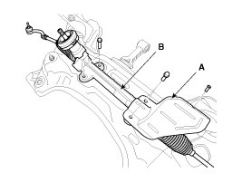
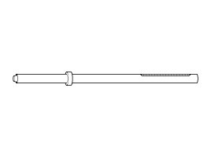
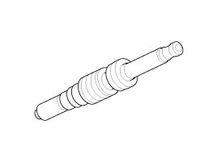

Repair Procedures
Replacement
1. Remove the front wheel & tire.
Tightening torque :
88.3 - 107.9 N.m(9.0 - 11.0 kgf.m, 65.1 - 79.6 lb-ft)

CAUTION:
Be careful not to damage to the hub bolts when removing the front wheel & tire.
2. Disconnect the stabilizer link (A) with the front strut assembly after loosening the nut.
Tightening torque :
98.1 - 117.7 N.m(10.0 - 12.0 kgf.m, 72.3 - 86.8 lb-ft)

3. Loosen the nut and then remove the tie-rod end with the front axle (A).
Tightening torque :
23.5 - 33.3 N.m(2.4 - 3.4 kgf.m, 19.4 - 24.6 lb-ft)

4. Loosen the nut and then remove the lower arm (A).
Tightening torque :
78.5 - 88.3 N.m(8.0 - 9.0 kgf.m, 57.9 - 65.1 lb-ft)

5. Loosen the bolt and then disconnect the universal joint assembly (A) from the pinion of the steering gear box.
Tightening torque :
32.4 - 37.3 N.m(3.3 - 3.8 kgf.m, 23.9 - 27.5 lb-ft)

CAUTION:
Lock the steering wheel in the straight ahead position to prevent the damage of the clock spring inner cable when you handle the steering wheel.
6. Remove the rubber hanger (A).

7. Remove the cross member from the body by loosening the roll rod (A) mounting bolts and nuts.
Tightening torque :
53.9 - 63.7 N.m(5.5 - 6.5 kgf.m, 39.8 - 47.0 lb-ft)

8. Loosen the bolts & nuts and then remove the front sub frame (A).
Tightening torque :
156.9 - 176.5 N.m(16.0 - 18.0kgf.m, 115.7 - 130.2lb-ft)


9. Remove the protector (A) & steering gearbox (B) from the front sub frame by loosening the mounting bolts.
Tightening torque :
58.8 - 78.8 N.m (6.0 - 8.0 kgf.m, 43.4 - 57.9 lb-ft)

10. Installation is the reverse of the removal.
11. Check the alignment.
Inspection
1. Rack bar
A. Check the rack gear for damage.
B. Check the rack bar for bend and deformation.

2. Pinion assembly
A. Check the pinion gear for damage.
B. Check the surface contacting the oil seal for damage.

3. Check the inside of rack housing for damage.
4. Check the bellows for being torn.